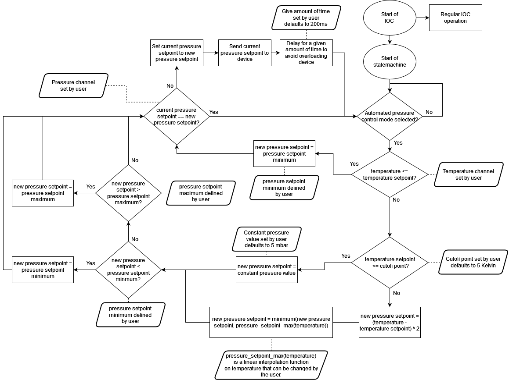
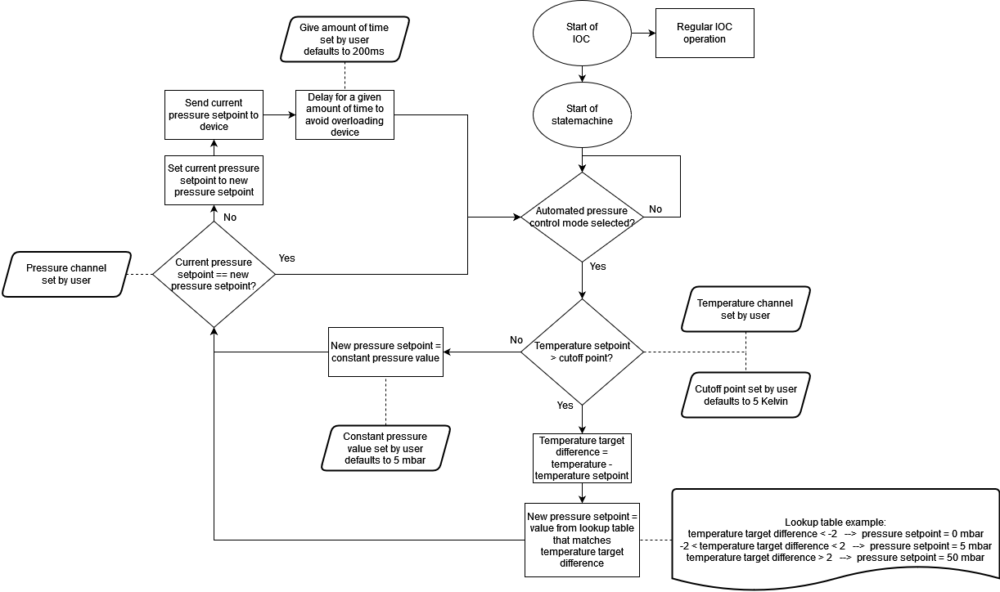
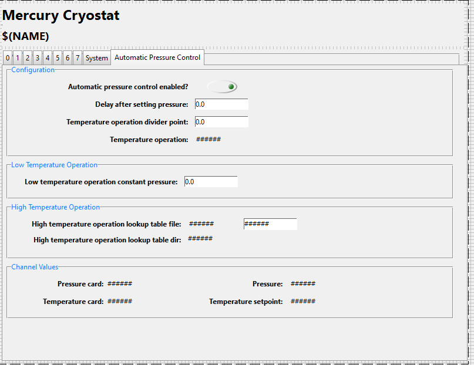

Mercury iTC - Enhanced cryostat control
The Problem
EMU is the only beamline to be fully controlled by new MercuryiTCs as opposed to ITC503s as of 03/11/2021. The MercuryiTCs are newer and will become replacements to the ITC503s for more beamlines as time goes on, particularly on WISH and RIKEN initially. The problem with the new MercuryiTCs is that they have two modes:
Pressure control mode
Controls needle valve based on the pressure
Automatic needle valve control mode
Controls needle valve based on heater power, affecting the pressure but ignoring the pressure set by the user
It is difficult to switch between the two modes and requires multiple Mercurys which cost thousands of pounds. For optimal control, scientists need the needle valve to be controlled based on the pressure (done automatically by the Mercury in Pressure Control Mode), but they also need the pressure to be controlled automatically based on the temperature setpoint (to be implemented in IBEX).
Design
This design comes after feedback from scientists and cryogenics teams on the previous design (below). There were concerns about the stability of control with the use of a single lookup table as it had not been tested before. What had been tested before is the algorithm used on the orange cryostat. The second design uses elements from both the first design and the orange cryostat. We have removed the use of the lookup table in favour of calculating the new pressure setpoint from (T - Tset) ^ 2 which is limited by two separate maximum pressures (one specifically for the given temperature) and one a more general “safe” maximum, and a minimum pressure.
Python test script
It was decided that we should test the algorithm using a python test script which can be found in the Settings/config/NDXEMU/Python/inst under the name cryo_control_test.py. The script has two classes: UserDefined and CryoControlAlgorithm. UserDefined contains defaults for parameters in the algorithm that a user will be able to define. CryoControlAlgorithm contains all the algorithmic logic. To run a test call CryoControlAlgorithm.run(), you can change the user-defined values by passing them as parameters to this run function e.g. to change the cutoff point call CryoControlAlgorithm.run(cutoff_point=7.0). Other parameters can be found in the script.
Flowchart

Some amendments were made in a future meeting after the creation of this flowchart:
temperature setpoint <= cutoff point->temperature setpoint <= cutoff point && temperature <= cutoff point.Set delay should be 10s by default, rather than 200ms.
Pressure law changed:
new pressure setpoint = (temperature - temperature_setpoint)^2becomesnew pressure setpoint = pressure setpoint minimum + temp scale * (temperature - temperature setpoint)^2
Implementation
Implementation is to be done by modifying the existing MERCURY_ITC IOC in IBEX (MERCURY_ITC IOC, MercuryiTC support module). This implementation will enable the mercury hardware to be always configured for Pressure Control Mode, whilst we add an automated pressure control behaviour to optimise the pressure for given temperature setpoints. This automated pressure control behaviour sets the pressure based on the temperature and the temperature setpoint. My recommendation would be to build the logic with a small state machine in snl, with new PVs where required
Switching the automated pressure control on and off
The automated pressure control behaviour needs to be able to be turned on and off. The IOC should behave as if no changes had been made to the IOC when this behaviour is turned off. The behaviour should be turned on and off by a boolean checkbox in the OPI, which controls a PV whose value is persisted through autosave.
The benefits of using autosave over a macro:
Makes the IOC more testable (not requiring a restart of the IOC in the IOCTestFramework to switch modes)
Enables switching between modes without reloading config
Operation delay
The user can choose a delay between setting setpoints to avoid overloading the device. This delay will be set in milliseconds with a default of 200 ms. It could be set to 0 ms to avoid any delay. The delay value should be an autosaved PV so the value is persisted.
Previous Design

Temperature cut-off
There will need to be two modes of operation, one at high temperatures which uses a lookup table and one at low temperatures which would set a constant pressure. We define high temperatures as any temperature above a user-defined cut-off point, and low temperatures as anything below it. This cut-off point should persist (using autosave) and default to 5 Kelvin.
Low-temperature operation
Another problem with the MercuryiTCs is that when in automated needle valve control at a temperature of less than 5 Kelvin the needle valve is fully opened, which is not optimal for temperature control. When operating below the cut-off temperature our automated pressure control should set the pressure to a user-defined constant pressure value. This constant pressure value should persist (using autosave) and default to 5 mbar.
High-temperature operation
When operating above the cut-off temperature the MERCURY_ITC IOC should use a lookup table to decide what to set the pressure setpoint to. There should be a reasonable default lookup table in the common configs area, but a user should be able to set their own lookup table stored in the instruments config area. The lookup table is a key-value pair. The key is the difference between the temperature and the temperature setpoint. The value is the pressure setpoint to set when the temperature - temperature setpoint is within the range of the values given key. The lookup table could be implemented using ReadASCII.
Device Screen
On branch at https://github.com/ISISComputingGroup/ibex_gui/tree/Ticket6729_enhanced_cryostat_control.

Questions whilst designing
There seems to be a mix of terminology for the lookup table key. Here I have used the difference between the temperature and temperature setpoint because it was one of the terms used and seemed logical to me. The other suggestion was using the difference between the current heater power and the target heater power. Is using the difference between the temperature and temperature setpoint correct? Also, the IOC currently does not have the ability to read a current and target heater power it seems to just read a single value. The manual seems to suggest for a heater controller we can set and get a heater power but that is untested comms behaviour from our end.
The heater power I have referred to here seems to be in Watts. There seems to be a few different heater values with different units. Is the one referred to previously a value in Watts, Volts or Percent?
This design expects the user to set a single temperature channel and a single pressure channel for the behaviour to work with, does this match the requirements? If so are the single temperature cards and pressure cards that we want to use for this control fixed or do they vary?
This design does not use parameters that the mercuryitc uses for auto needle valve control but relies on a lookup table being handwritten. Is this sufficient or do we need to come up with an algorithm to tune that table from some parameters?